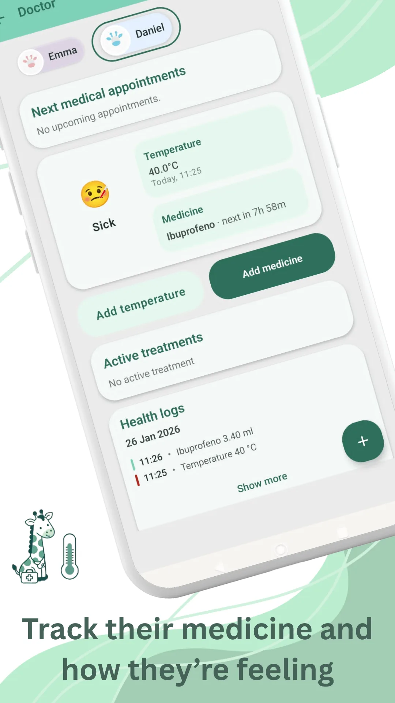

On this page · 7 sections
In short
Most children say their first words around 12 months, have a vocabulary of about 50 words or more by age 2 and start putting two words together at that same stage. Before talking, they babble, point, wave goodbye and understand much more than they say. The pace varies a lot: one in five children starts talking later than others their age. If you are worried, or if they lose words or skills they already had, talk to your pediatrician.
- First words
- ~12 monthsone or two, like mama or bye
- At age 2
- 50+ wordsand puts two words together
- Understanding comes first
- Before talkingresponds to their name and simple words
- See your doctor if
- Loses wordsor skills, at any age
Baby words by age: sounds, words, understanding and gestures
This is a rough guide, not a test. Many children reach each milestone toward the end of their age range, and that is normal too. We only give word counts where the sources include them.
| Age | Sounds and babbling | Words (approx.) | Understanding | Gestures |
|---|---|---|---|---|
| 0-3 months | Makes soft sounds like “ooo”, “aah” or “mmm” and takes turns with you. | None yet. | Turns their head or looks toward voices; calms down or smiles when you talk to them. | The sources do not list specific gestures at this age. |
| 4-6 months | Combines vowels, sometimes with a consonant (“aaagoo”, “daaa”). | None yet. | Responds to facial expressions and to toys that make sounds. | The sources do not list specific gestures at this age. |
| 7-9 months | Babbles in strings: “mamama”, “bababa”. | None yet with a clear meaning. | Looks at you when you call their name and recognizes the names of some people and objects. | Lifts their arms to be picked up; pushes away what they do not want. |
| 10-12 months | Tries to copy the sounds you make. | 1-2 words, like “mama”, “dada”, “hi” or “bye”. | Responds to simple words and phrases like “bye-bye” or “look at mommy”. | Points, waves and shows or gives you objects. |
| 13-18 months | Mixes long strings of sounds, syllables and real words with a talking tone. | Adds words gradually; the sources give no fixed number at this age. Between 18 months and 2 years they learn about one new word per week. | Follows directions like “give me the ball” or “come here” and looks around when you ask “where is…?”. Points to a body part. | Points to ask for things or show them; shakes or nods their head for “no” and “yes”. |
| 18-24 months | Their pronunciation may still be unclear (“doo” for “shoe”). | 50 or more words by age 2, and starts putting two together (“more water”). | Follows two-step commands, such as “get the spoon and put it on the table”. | The sources add no new gestures at this age. |
| 24-36 months | Easier and easier to understand, although people who do not know them well may not catch everything (at age 2, an adult usually understands about half). | Vocabulary grows very fast; moves from 2-3 word sentences to longer ones, with plurals and verbs (“eating”). | Answers simple questions and understands almost everything you say. | The sources list no new gestures; asks for your attention with words (“look at me!”). |
Write down their first words
Note their first words and milestones with the date in the Raffy diary, and take them to your next pediatrician visit.

When not to worry
- Ranges are wide. The milestones in the chart are approximate: one in five children learns to talk later than others their age.
- Understanding comes before talking. At 12 months many children respond to simple words before they can say many. Understanding, looking when you call and pointing count as much as the words they say.
- Gestures, grunts and a single word count. Pointing or saying “Outside?” with a questioning tone is already communicating.
- Boys, girls and siblings. The AAP notes that, on average, boys tend to start talking a little later than girls, but the difference evens out by school age. Neither it nor the other sources set different milestones by sex or birth order (such as a second child talking sooner because of an older sibling), so use the chart as a guide.
- Not being fully understood is normal. At age 2 it is normal for only about half of what they say to be understood.
Bilingual children or children who hear several languages
Using more than one language does not confuse children or cause language delays. Children who grow up with more than one language say their first words around age 1 and put two words together around age 2, just like everyone else.
- They may mix languages. Combining words or rules from two languages in one sentence is an expected part of learning more than one at a time.
- A real problem shows up in every language. If there is a communication problem, it appears in all the languages they use; if you are worried, talk to a speech-language pathologist.
- The more they hear and practice, in whatever language, the better their language will develop.
Pediatric safety: when to see the pediatrician
- They lose words or skills they already had, at any age. Book an appointment soon.
- They do not respond when you call their name or seem not to react to some sounds: ask to have their hearing checked.
- Around 12 months they do not use gestures, such as pointing or waving goodbye.
- Around 18 months they prefer gestures to sounds and have trouble imitating sounds.
- At age 2 they do not put two words together, do not follow simple instructions or only repeat what they hear without saying words of their own.
- They seem to live in their own world or prefer to play alone, as if they did not hear you.
- Something does not feel right to you, even if it is not on this list: if you are worried, do not wait.
This article is educational, is not a screening or diagnostic tool and does not replace your pediatrician's assessment. If there is a concern, the pediatrician can order a hearing test and refer you to a speech-language pathologist.
How to encourage language at home
- Talk to them face to face, in a sing-song voice, naming what you both see; add more detail as they grow.
- Read with them from the first months. You do not need to read the words: talking about the pictures is enough.
- Narrate what you do while feeding, changing, bathing, cooking or cleaning.
- Sing songs and rhymes with gestures, and take turns: answer when they babble, like in a conversation.
- Less background noise. A TV or radio left on makes it harder to listen; turn them off when you play or talk.
Above all, enjoy those moments together: you do not need to “teach” words like in a classroom.
If you also want to review what your baby does before talking, see our guide to first-year development milestones.
Frequently asked questions
How many words should my baby say at one year?
One or two, like “mama”, “dada”, “hi” or “bye”. If they do not say any yet but already point, wave goodbye and respond to simple words, mention it at the checkup; the pediatrician will look at their case.
How many words should a child say at 2 years?
Most say about 50 words or more and start putting two together, like “more water” or “let's go outside”. Some healthy children go more slowly; if at age 2 they do not combine words, talk to your pediatrician.
Is understanding the same as talking?
No. Children understand quite a lot before they can say it. Responding to their name, following simple instructions and pointing at things is a good sign even if they still say few words.
Do boys talk later than girls?
The AAP notes that, on average, boys tend to start talking a little later than girls, but the difference evens out by school age. Neither it nor the other sources set different milestones by sex, so use the chart as a guide. What matters is that they keep progressing, not comparing with other children.
Does raising my child in two languages delay their language?
No. Using more than one language does not confuse children or cause language delays. Bilingual children say their first words and put two words together at ages similar to everyone else.
Do I need to ask for a hearing test if they talk little?
If you are worried about how they talk, it is reasonable for the pediatrician to check their hearing too, because hearing poorly affects saying, understanding and imitating words. Mention it if they do not respond to their name or to some sounds.
Sources
- American Speech-Language-Hearing Association (ASHA)Communication milestones: birth to 1 year
- American Speech-Language-Hearing Association (ASHA)Communication milestones: 13 to 18 months
- American Speech-Language-Hearing Association (ASHA)Communication milestones: 19 to 24 months
- American Speech-Language-Hearing Association (ASHA)Communication milestones: 2 to 3 years
- ASHA · Helping You CommunicateLearning more than one language
- American Academy of Pediatrics · HealthyChildren.orgLanguage delay
- American Academy of Pediatrics · HealthyChildren.orgLanguage development: 2-year-olds
- American Academy of Pediatrics · HealthyChildren.orgLanguage development: 1-year-olds
- NHS (UK)Help your baby learn to talk
- Nemours KidsHealthRetraso en el desarrollo del habla o del lenguaje (in Spanish)
- Pediatrics (AAP) · Zubler et al., 2022 · PMID 35132439Evidence-Informed Milestones for Developmental Surveillance Tools
We checked this article against these sources on Nov 22, 2026. It is educational, not medical advice. Editorial Policy